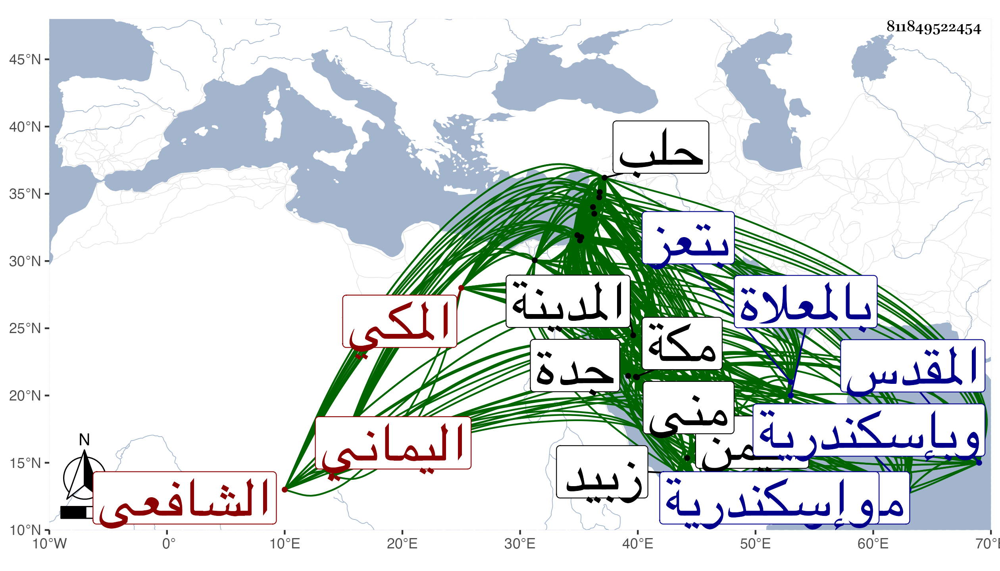

0902Sakhawi.DawLamic.ITO20230111-ara1.EIS1600.811849522454
Biography ID: 811849522454
537
علي بن إبراهيم بن علي بن راشد الموفق أبو الحسن الإبي بكسر الهمزة ثم موحدة مشددة اليماني ثم المكي الشافعي ويعرف بالإبي . ولد قبيل التسعين وسبعمائة بتعز من بلاد اليمن ونشأ بها فحفظ القرآن وصلى به على العادة وهو ابن ثمان وانفرد في تلك النواحي بصلاته به في هذا السن وكذا حفظ الملحة والتنبيه إلا اليسير من آخره ونحو أربعين مقامة من مقامات الحريري ولازم الفقيه عبد المولى بن محمد بن حسن الخولاني حتى قرأ عليه التنبيه ومختصر الحسن والجمل للزجاجي ، وقدم مكة مرارا للحج أولها في سنة خمس وجاور بها في كثير منها وكذا زار النبي صلى الله عليه وسلم غير مرة أولها في سنة ثمان ولقي بهما جمعا من الأعيان فكان ممن لقيه بمكة الزين أبو بكر المراغي والجمال بن ظهيرة وقريبه الخطيب أبو الفضل بن ظهيرة والشهاب أحمد بن إبراهيم المرشدي والزين الطبري وابن سلامة في آخرين وبالمدينة المراغي أيضا والزين عبد الرحمن بن علي بن يوسف الزرندي ورقية ابنة يحيى بن مزروع فأخذ عنهم وعن غيرهم بقراءته وقراءة غيره وحضر دروس العلماء منهم ولقي بزبيد المجد الشيرازي والشرف بن المقري فانتفع بهما وارتحل في موسم سنة أربع عشرة رفيقا للجمال بن موسى المراكشي الحافظ صحبة الركب الشامي فسمعا بالمدينة ثم بدمشق وحلب وحمص وحماه وبعلبك والرملة وبيت المقدس والخليل والقاهرة ومصر وإسكندرية فكان ممن سمع عليه بدمشق عائشة ابنة ابن عبد الهادي وعبد القادر بن إبراهيم الأرموي وعبد الرحمن بن طلوبغا والحفاظ الثلاثة ابن حجي والحسباني وابن الشرائحي والشمس بن المحب وخلق بحلب حافظها البرهان والعز الحاضري والشهاب بن العديم وطائفة وبحمص خطيبها الشمس محمد بن محمد بن أحمد السبكي والبدر العصياتي وغيرهما وبحماة العلاء ابن المغلي والشهاب بن الرسام والشرف بن خطيب الدهشة ونحوهم وببعلبك محدثها التاج بن بردس وغيره وبالرملة الزاهد الشهاب بن رسلان وببيت المقدس البرهان بن الحافظ أبي محمود والشمس محمد بن أبي بكر بن كريم والبدر حسن بن موسى وجماعة وببلد الخليل أحمد بن موسى الحبراوي والعماد إسماعيل بن إبراهيم ابن مروان وغيرهما وبالقاهرة الشرف بن الكويك والعز بن جماعة والجلال البلقيني والولي العراقي وشيخنا ومما أخذه عنه النخبة والشمس بن الزراتيتي وابن زقاعة وغيرهم وبإسكندرية التاج محمد بن التنسي والكمال بن خير والبدر بن الدماميني ورجع من هذه لرحلة بمسموع كثير وشيوخ جلة وفوائد جملة واستوطن مكة من أثناء سنة أربعين وبرع في فنون خصوصا الأدب وطارح شيخنا وغيره وجمع مجاميع حسنة وفوائد مهمة وكتب بخطه الحسن كثيرا لنفسه وغيره وحدث سمع منه الفضلاء وأخذت عنه الكثير بجدة ثم بمكة ومنى وكان إماما مفننا أديبا بارعا متواضعا حسن الهيئة والمحاضرة جميل الصورة والعشرة كثير الفكاهة والنوادر والاستحضار صبورا على الإسماع حسن الود والمذاكرة سريع النادرة وعلى ذهنه فضائل وفوائد مع الاجتهاد في الطواف ومداومة التلاوة وغيرهما من أسباب الطاعة لكنه كان كثير النعاس وأظنه من السهر . مات في ذي الحجة سنة تسع وخمسين بمكة وصلى عليه من الغد ودفن بالمعلاة رحمه الله وإيانا ومما كتبته عنه من نظمه :
| إذا العشرون من رمضان ولت | فواصل ذكر ربك كل حين |
| ولا تغفل عن التطواف وقتا | فأنت من الفراق على يقين |
